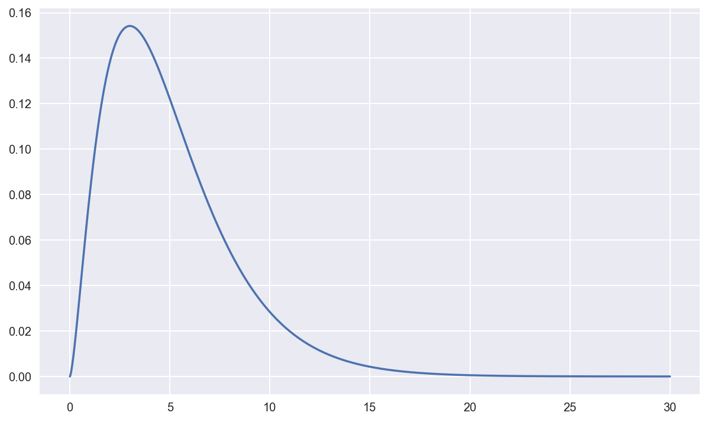
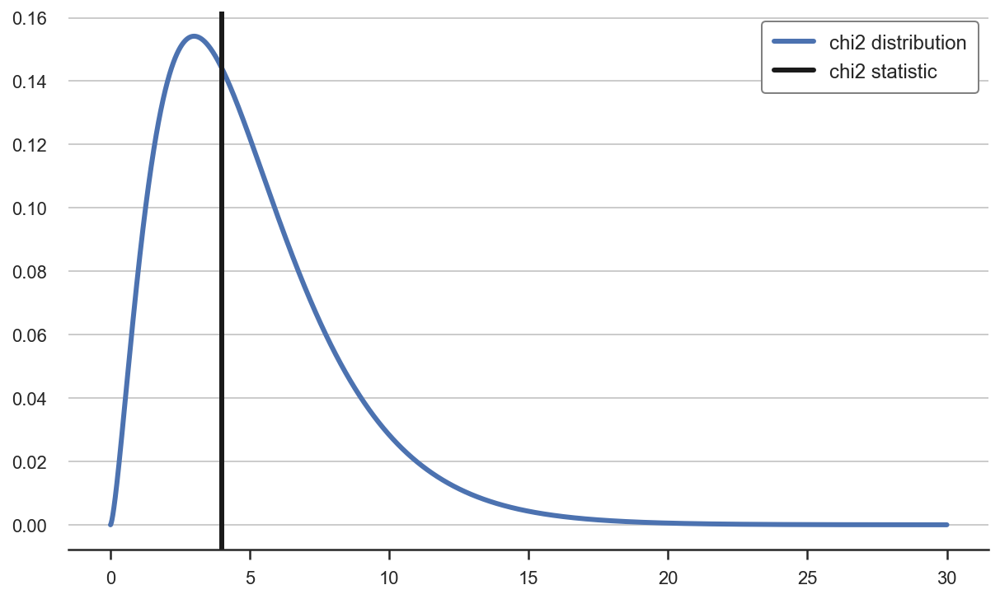
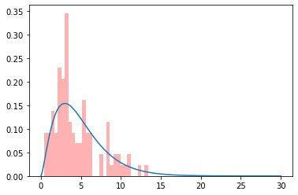
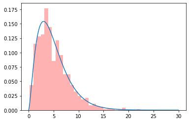
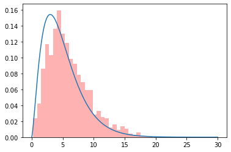
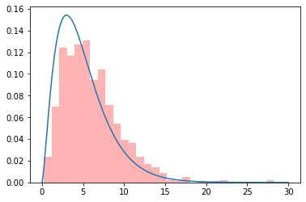

Chi-Squared Test for Dummies
If you search the Wikipedia definition of Chi-Squared test, you get
Pearson’s chi-squared test $\chi^2$ is a statistical test applied to sets of categorical data to evaluate how likely it is that any observed difference between the sets arose by chance.
What does it mean? Let’s see it together.
Example 1: is a dice fair?
Suppose you want to test whether a dice is fair.
You throw the dice 60 times and you count the number of times you get each outcome.
Let’s simulate some data coming from a fair dice.
import numpy as np
import pandas as pd
# Generate data
def generate_dice_data(N=60):
numbers = [1,2,3,4,5,6]
dice_throws = np.random.choice(numbers, size=N)
data = pd.DataFrame({"number": numbers,
"observed": [sum(dice_throws==n) for n in numbers],
"expected": N / 6})
return data
dice_data = generate_dice_data()
dice_data
| number | observed | expected | |
|---|---|---|---|
| 0 | 1 | 14 | 10.0 |
| 1 | 2 | 12 | 10.0 |
| 2 | 3 | 7 | 10.0 |
| 3 | 4 | 9 | 10.0 |
| 4 | 5 | 12 | 10.0 |
| 5 | 6 | 6 | 10.0 |
If we were throwing the dice a lot of times, we would expect the same number of observations for each dice-number. However, there is inherent noise in the process. How can we tell whether the fact that we didn’t get exactly 10 observations for each dice-number is just due to randomness or it’s because the dice is unfair?
The idea is to compute some statistic whose distribution is known under the assumption that the dice is fair, and then check if its value is “unusual” or not. If the value is particularly “unusual”, we reject the null hypothesis that the dice is fair.
In our case, the statistic we choose is the chi-squared $\chi^{2}$ test-statistic.
The value of the chi-squared $\chi^{2}$ test-statistic is
$$ T_{\chi^2} = \sum {i=1}^{n}{\frac {(O{i}-E_{i})^{2}}{E_{i}}}=N\sum {i=1}^{n}{\frac {\left(O{i}/N-p_{i}\right)^{2}}{p_{i}}} $$
where
- $T_{\chi^2}$ = Pearson’s cumulative test statistic, which asymptotically approaches a $\chi^{2}$ distribution.
- $O_{i}$ = the number of observations of type i.
- $N$ = total number of observations
- $E_{i}=Np_{i}$ = the expected (theoretical) count of type $i$, asserted by the null hypothesis that the fraction of type $i$ in the population is $p_{i}$
- $n$ = the number of cells in the table.
# Compute value of the statistic
def compute_chi2_stat(data):
return sum( (data.observed - data.expected)**2 / data.expected )
chi2_stat = compute_chi2_stat(dice_data)
chi2_stat
5.0
What do we make of this number? Is it “unusual”?
We know that if the dice was fair, this statistic would be distributed as a $\chi^{2}$ distribution with $n-1$ degrees of freedom.
Important! Do not confuse the chi-squared test statistic (a number) with the chi-squared distribution (a distribution).
What does a $\chi^{2}$ distribution with $n-1$ degrees of freedom look like?
import matplotlib.pyplot as plt
from scipy.stats import chi2
# x-axis ranges from 0 to 20 with .001 steps
x = np.arange(0, 30, 0.001)
# Chi-square distribution with 5 degrees of freedom
chi2_5_pdf = chi2.pdf(x, df=5)
# Plot
plt.plot(x, chi2_5_pdf);
How does the value of the statistic we have observed compares with its the distribution under the null hypothesis of a fair dice?
# plot Chi-square distribution with 5 degrees of freedom
plt.plot(x, chi2.pdf(x, df=5), );
plt.vlines(chi2_stat, ymin=0, ymax=0.16, color='k', label='chi2 statistic')
plt.legend();

The test statistic seems to fall well within the distribution, i.e. it does not seem to be an unusual event. Indeed, the question we want to answer is: “under the null hypothesis that the dice is fair, how unlikely is the statistic we have observed?”.
The last component we need in order to built an hypothesis test, is a level of confidence, i.e. a threshold of “unlikeliness” of an event, below which we declare that the event is too unlikely under the model, for the model to be true. Let’s say we decide to set that threshold at 5%.
If the likelihood of observing an even that (or more) extreme than the one we have actually observed is less than 5%, we reject the nully hypothesis that the dice is fair.
What is this value for a chi-squared distribution with 5 degrees of freedom?
# Compute the Percent Point Function of the chi-squared distribution
z95 = chi2.ppf(0.95, df=5)
z95
11.070497693516351
Since our value is smaller, we do not reject the null.
We can plot the rejection and non-rejection areas in a plot.
# plot Chi-square distribution with 5 degrees of freedom
plt.plot(x, chi2_5_pdf);
plt.fill_between(x[x>z95], chi2_5_pdf[x>z95], color='r', alpha=0.4, label='rejection area')
plt.fill_between(x[x<z95], chi2_5_pdf[x<z95], color='g', alpha=0.4, label='no rejection area')
plt.vlines(chi2_stat, ymin=0, ymax=0.16, color='k', label='chi2 statistic')
plt.legend();

Why the Chi-squared Distribution?
How do we know that that particular statistic has that particular distribution?
Before digging into the math, we can check this claim via simulation. We will repeat the procedure above many times, i.e.
- roll a (fair) dice 60 times
- compute the chi square statistic
and then plot the distribution of chi square statistics.
# Simulate data
def simulate_data(K, N, dgp):
chi2_stats = []
for i in range(K):
dice_data = dgp()
chi2_stats += [compute_chi2_stat(dice_data)]
return np.array(chi2_stats)
chi2_stats = simulate_data(K=100, N=60, dgp=generate_dice_data)
# Plot data
plt.hist(chi2_stats, density=True, bins=30, alpha=0.3, color='r');
plt.plot(x, chi2_5_pdf);

Since we only did it 100 times, the distribution looks pretty coarse, but vaguely close. Let’s now try 1000 times.
chi2_stats = simulate_data(K=1000, N=60, dgp=generate_dice_data)
# Plot data
plt.hist(chi2_stats, density=True, bins=30, alpha=0.3, color='r');
plt.plot(x, chi2_5_pdf);

The empirical distribution of the test statistic is indeed very close to its theoretical counterpart.
Some Statistics
Why does the distribution of the test statistic look like that? Let’s now dig deeper into the math.
There are two things we need to know in order to understand the answer:
- the Central Limit Theorem
- the relationship between a chi-squared and a normal distribution
The Central Limit Theorem says that
In probability theory, the central limit theorem (CLT) establishes that, in many situations, when independent random variables are summed up, their properly normalized sum tends toward a normal distribution (informally a bell curve) even if the original variables themselves are not normally distributed.
Where does a normal distribution comes up in our case? If we look at a single row in our data, i.e. the occurrences of a specific dice throw, it can be intepreted as the sum of realization from a bernoulli distribution with probability 1/6.
In probability theory and statistics, the Bernoulli distribution is the discrete probability distribution of a random variable which takes the value $1$ with probability $p$ and the value $0$ with probability $q=1-p$.
In our case, the probability of getting a particular number is exactly 1/6. What is the distribution of the sum of its realizations? The Central Limit Teorem also tes us that:
If $X_{1},X_{2},\dots ,X_{n},\dots$ are random samples drawn from a population with overall mean $\mu$ and finite variance $\sigma ^{2}$, and if $\bar {X}_{n}$ is the sample mean of the first $n$ samples, then the limiting form of the distribution,
$$ Z = \lim {n\to \infty} \sqrt{n} \left( {\frac {{\bar {X}}{n} - \mu }{\sigma}}\right) $$
is a standard normal distribution.
Therefore, in our case, the distribution of the sum of beroulli distributions with mean $p$ is distributed as a normal distribution with
- mean $p$
- variance $p * (1-p)$
Therefore, we can obtain an random variable that is asymptotically standard normal distributed as
$$ \lim_{n \to \infty} \ \sqrt{n} \left( {\frac {{\bar {X}}_{n} - p}{\sqrt{p * (1-p)}}}\right) \sim N(0,1) $$
Our last piece: what is a chi-squared distribution?
If $Z_1, …, Z_k$ are independent, standard normal random variables, then the sum of their squares,
$$ Q = \sum {i=1}^{k} Z{i}^{2} $$ is distributed according to the chi-squared distribution with $k$ degrees of freedom.
I.e. the sum of standard normal distributions is a chi-squared distribution. Since the normalized sum of realizations of each dice number should converge to a standard normal distribution, their sum of squares should converge to a chi squared distribution. I.e.
$$ \lim_{n \to \infty} \ \sum_{k} n {\frac {{(\bar {X}}_{n} - p)^2}{p * (1-p)}} \sim \chi^2_k $$
There is just one issue: the last distribution is not really independent from the others. In fact, as soon as we know that we have thrown 60 dices and how many 1s, 2s, 3s, 4s and 5s we got, we can compute the number of 6s. Therefore, we should exlude one distribution since only 5 (or in general k-1) are truly independent.
In practice, however, we sum all distributions, but then we scale them down by multiplying them by $(1-p)$ so that we have
$$ \lim_{n \to \infty} \ \sum_{k} n {\frac {{(\bar {X}}{n} - p)^2}{p}} \sim \chi^2{k-1} $$
which is exactly the formula we used to compute the test statistic:
$$ Q = \sum {i=1}^{n}{\frac {(O{i}-E_{i})^{2}}{E_{i}}}=N\sum {i=1}^{n}{\frac {\left(O{i}/N-p_{i}\right)^{2}}{p_{i}}} $$
Example 2: are grades independent from gender?
Chi-squared tests can also be used to test independence between 2 variables. The idea is fundamentaly the same of the test in the previous section: checking systematic differences between observed and expected values, across different variables.
Let’s first generate some grades.
# Generate data
def generate_grades_data(N_male=60, N_female=40):
grade_scale = [1,2,3,4]
p = [0.1, 0.2, 0.5, 0.2]
grades1 = np.random.choice(grade_scale, size=N_male, p=p)
data1 = pd.DataFrame({"grades": grade_scale,
"gender": "male",
"observed": [sum(grades1==n) for n in grade_scale],
"expected": np.dot(N_male, p)})
grades2 = np.random.choice(grade_scale, size=N_female, p=[0.1, 0.2, 0.5, 0.2])
data2 = pd.DataFrame({"grades": grade_scale,
"gender": "female",
"observed": [sum(grades2==n) for n in grade_scale],
"expected": np.dot(N_female, p)})
data = pd.concat([data1, data2])
return data
data_grades = generate_grades_data()
data_grades
| grades | gender | observed | expected | |
|---|---|---|---|---|
| 0 | 1 | male | 5 | 6.0 |
| 1 | 2 | male | 14 | 12.0 |
| 2 | 3 | male | 32 | 30.0 |
| 3 | 4 | male | 9 | 12.0 |
| 0 | 1 | female | 9 | 4.0 |
| 1 | 2 | female | 5 | 8.0 |
| 2 | 3 | female | 21 | 20.0 |
| 3 | 4 | female | 5 | 8.0 |
Has there been discrimination?
The value of the test-statistic is
$$ \chi ^{2}=\sum {{i=1}}^{{r}}\sum {{j=1}}^{{c}}{(O{{i,j}}-E{{i,j}})^{2} \over E_{{i,j}}} =N\sum {i,j}p{i\cdot }p_{\cdot j}\left({\frac {(O_{i,j}/N)-p_{i\cdot }p_{\cdot j}}{p_{i\cdot }p_{\cdot j}}}\right)^{2} $$
where
-
$N$ is the total sample size (the sum of all cells in the table)
-
$p_{i\cdot }={\frac {O_{i\cdot }}{N}}=\sum {j=1}^{c}{\frac {O{i,j}}{N}}$ is the fraction of observations of type i ignoring the column attribute (fraction of row totals), and
-
$p_{\cdot j}={\frac {O_{\cdot j}}{N}}=\sum {i=1}^{r}{\frac {O{i,j}}{N}}$ is the fraction of observations of type j ignoring the row attribute (fraction of column totals).
So the formula for the test statistic is the same
chi2_stat = compute_chi2_stat(data_grades)
chi2_stat
9.933333333333334
As before, we can double-check whether the statistic is indeed distributed as a chi-squared with $k-1$ degrees of freedom by simulating the data generating process.
# Plot data
chi2_stats = simulate_data(K=1000, N=60, dgp=generate_grades_data)
plt.hist(chi2_stats, density=True, bins=30, alpha=0.3, color='r');
plt.plot(x, chi2_5_pdf);

What happened? We forgot to change the degrees of freedom! We now have 6 instead of 5 (4 for each gender).
chi2_7_pdf = chi2.pdf(x, df=6)
# Plot data
chi2_stats = simulate_data(K=1000, N=60, dgp=generate_grades_data)
plt.hist(chi2_stats, density=True, bins=30, alpha=0.3, color='r');
plt.plot(x, chi2_7_pdf);
